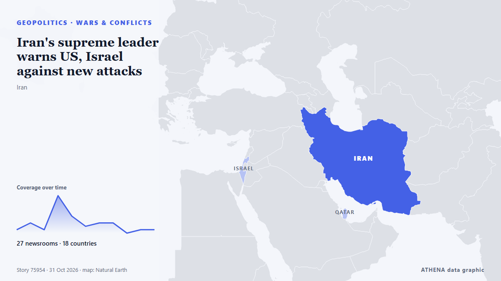

Kriege und Konflikte
| 18. Okt. | 0 |
|---|---|
| 19. Okt. | 1 |
| 20. Okt. | 1 |
| 21. Okt. | 0 |
| 22. Okt. | 0 |
| 23. Okt. | 4 |
| 24. Okt. | 0 |
| 25. Okt. | 2 |
| 26. Okt. | 2 |
| 27. Okt. | 5 |
| 28. Okt. | 3 |
| 29. Okt. | 1 |
| 30. Okt. | 2 |
| 31. Okt. | 2 |
Schlagzeilen werden auf Englisch angezeigt, wie veröffentlicht.

Iran's supreme leader warns US, Israel against new attacks
Mojtaba Khamenei issued the warning following threats from the Islamic republic's foes of a possible resumption of strikes. von Free Malaysia Today
CONTSHIP JET Container Ship Sinks After Drone Attack in Black Sea
The CONTSHIP JET sank after being struck by three drones off Bulgaria; 18 crew rescued, and 20 containers fell into the sea. von SeaNews Türkiye
Evacuations begin in Ukraine under localized ceasefire brokered by Melania Trump
Residents of the Russian-occupied Ukrainian town have reported a worsening food crisis since 2022. von Express Tribune
North Korea fires around 10 ballistic missiles toward sea off east coast, Seoul says
North Korea launched approximately 10 short-range ballistic missiles into the sea off its east coast. von Arab News
Over 600 drones targeted Moscow and surrounding area
Moscow Mayor Sergei Sobyanin claims that 613 drones flew towards Moscow Oblast overnight, while restrictions were imposed at three airports and flights were diverted. von Ukrainska Pravda (English)
‘Horrific’ Russian drone strike kills 14 at Ukraine train station
Another 14 people were wounded, including an 11-year-old boy and a man who had “both legs amputated”. von The Straits Times
Yemen's Houthis say they attacked Saudi Ras Tanura refinery, no Saudi confirmation
Yemen's Houthis claimed attacks on three Saudi oil facilities and two international airports. von The Jerusalem Post
Iran says discussing plan with mediators to end war, reopen Hormuz
A Qatari delegation visited Tehran on Sunday for talks to review developments including the latest on negotiations, Hormuz and energy supplies. von Free Malaysia Today
After years under fire, a rare quiet settles over Ukrainian city as truce holds
KHERSON, Ukraine (AP) — A planned six-day ceasefire brokered by U.S. first lady Melania Trump and tied to a humanitarian aid mission in a Russian-occupied town has brought rare quiet to the… von The Canadian Press (via CityNews)
El Salvador sends 2,000 troops to Haiti to rescue four missing soldiers
A U.N.-backed force sent to combat gang violence said it was looking for the soldiers, who were in a gang-controlled area when they were attacked. von The New York Times (World)
US warns allies of possible Iran strikes after midterms: Report
Tensions across the Middle East remain high, with the United States reportedly preparing for potentially major military operations against Iran following the US midterm elections, while fighting… von CGTN (World)
Russia, Ukraine say Oleshky demining operations complete, humanitarian operation to proceed
The localised ceasefire was announced on Oct 23. von The Straits Times
Houthis strike Yemen's Aden airport after evacuation warning
ADEN/DUBAI, Oct 28 - Yemen's Houthis attacked Aden airport on Wednesday, government officials said, after the Iran-aligned group warned people to evacuate the facility as fighting escalated in the… von The Straits Times
Israeli drone strike kills two in central Gaza
Several people wounded in Israeli strike on tent sheltering displaced Gazans, Wafa reports Several displaced Gazans were injuries on Thursday evening following an Israeli strike west of Gaza City… von Middle East Eye
Ethiopia clashes push 50,000 to flee to Kenya
The outbreak of fighting between rival forces in southern Ethiopia last week has led some 50,000 people to seek refuge in neighbouring Kenya, the United Nations said Wednesday, citing local… von France 24 English
Algeria to send troops to Niger in first foreign deployment since 1973
ALGIERS, Oct 25 - Algeria's parliament approved a resolution on Sunday authorising the deployment of army units to Niger, a parliamentary statement said, in what would mark Algeria's first foreign… von The Straits Times
Romania blames Russia for drone that sinks cargo ship; 1 killed, 3 missing
Romania’s rescue operation recovered nine people and one deceased body from a distressed ship in the Black Sea, while three remain missing. von Arab News
Syria and Jordan reopen border crossing after deadly air strikes
Jordanian armed forces carried out strikes on "militant hideouts" in Syria that it said were linked to a deadly church attack on the kingdom last week. von DW English
UN inquiry says Israel kept committing genocide in Gaza after truce
GENEVA, Oct 26 - Israel continued to commit genocide in Gaza after last October's US-brokered ceasefire in the enclave, a UN commission said in a report published on Monday that Israel dismissed as… von The Straits Times